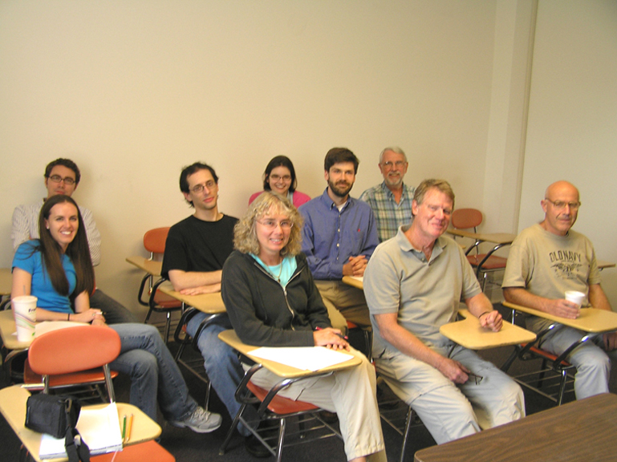

Seminar in operator theory and operator algebras (MATH 9310)
Spring 2010
The seminar is organized by David Sherman. We meet Tuesdays 3:30-4:30 in Kerchof 326.

January 26 |
Tom Kriete, UVaFoguel operators IAny operator on Hilbert space that is similar to a contraction is automatically power bounded and even (by Von Neumann's inequality) polynomially bounded. In 1959 Sz.-Nagy asked whether power boundedness implies the similarity condition. In 1964 S. R. Foguel introduced an interesting class of operators that provided a counterexample. In 1970 Halmos advocated a stronger question: does similarity follow from polynomially bounded? This took longer to crack: Pisier's 1997 counterexamples also involved (souped up) Foguel operators. This talk will discuss properties of Foguel operators and connections with the similarity problems and with Hankel operators. |
February 2 |
Tom Kriete, UVaFoguel operators IISee previous week's abstract. |
February 9 |
CANCELED. Rachel Weir, Allegheny CollegeBeurling's Theorem in the Bergman space and its consequencesIn 1949, Beurling showed that every closed z-invariant subspace of the Hardy space is generated by a classical inner function. Aleman, Richter and Sundberg established a result which can be viewed as a Bergman space version of Beurling's theorem in 1996. Given the more complicated nature of the invariant subspaces of the Bergman space, this was a significant breakthrough. Shimorin continued this progress in 2001 and 2002 when he extended this result to certain weighted Bergman spaces, using a different approach. We will describe these developments and their consequences for both the weighted and unweighted Bergman spaces. In addition, we will outline several open problems and some recent related work. CANCELED. |
February 16 |
No seminar |
February 23 |
No seminar |
March 2 |
Lon Mitchell, Virginia Commonwealth UniversityEigenstates of C*-algebrasWe define and exhibit some uses of these special states. The talk is based on this paper. |
March 9 |
Spring break |
March 16 |
David Blecher, University of HoustonNoncommutative Hp spaces and von Neumann algebrasThe main theme of our talk is on how classical theory of functions, and function algebras, `goes noncommutative', using C*-algebra and von Neumann algebra tools. We will aim the talk at nonexperts, explaining these tools as we go. Mostly we will talk about our work with Labuschagne, in which we transferred the theory of generalized Hp spaces for abstract function algebras, mostly from the 1960s, to a von Neumann algebra context introduced by Arveson. In particular, one has to take the classical arguments, which feature numerous tricks with functions which fail for operators, and replace them with noncommutative tools coming from the theory of von Neumann algebras and unbounded operators.Mr. Blecher will also give the department colloquium on March 18. |
March 23 |
Craig Kleski, UVaMatricial ranges of Hilbert space operatorsA famous result of Toeplitz and Hausdorff shows that the numerical range of a bounded operator on a Hilbert space is convex set in the complex plane. In this talk, we will consider several "matrix-valued" generalizations of the numerical range, and discuss when these sets are convex. This requires some useful ideas from the theory of operator spaces. |
March 30 |
Barbara MacCluer, UVaLinear-fractional composition operators in several variablesAfter reviewing the situation in one variable, we discuss when a difference of two composition operators with linear-fractional symbols can be compact on the Hardy or weighted Bergman space in the unit ball of CN. |
April 6 |
Geoff Price, US Naval AcademyMarginal tracial states on tensor products of matrix algebras
A state φ on the tensor product Mn(C) ⊗ Mn(C) of n x n matrices is called a marginal tracial state if |
April 13 |
No seminar |
April 20 |
Vrej Zarikian, US Naval AcademyMatrix paving and the Kadison-Singer problemThe Kadison-Singer Problem (KS), open since 1959, asks whether every pure state on l∞ extends uniquely to a pure state on B(l2). Owing to work of Anderson, it is known that KS is equivalent to the Matrix Paving Problem: Does there exist an ε > 0 and a natural number k such that every norm-one zero-diagonal n x n matrix ``k-paves'' to (1 - ε)? In spite of significant progress by Berman-Halpern-Kaftal-Weiss and Bourgain-Tzafriri, the Matrix Paving Problem remains unsolved. In the first part of the talk, based on joint work with Gary Weiss, we examine the Matrix Paving Problem for small parameter values: k = 3 and n < 17. We show that every 4 x 4 (resp. 5 x 5) zero-diagonal matrix 3-paves to (1 + √5)/2 ≈ .6180, that every 6 x 6 zero-diagonal matrix 3-paves to 1/√2 ≈ .7071, and that these results are sharp. On the other hand, we produce a 13 x 13 unitary circulant that 3-paves to approximately .8615. In the second part of the talk, based on the undergraduate honors thesis of Jacob Cates, we specialize further, considering the 3-paving problem for small circulants. We show that every 7 x 7 real-symmetric zero-diagonal circulant 3-paves to 1/[cos(π/7) + cos(2π/7) + cos(3π/7)] ≈ .5724 and that this result is sharp. We also show that every 9 x 9 zero-diagonal circulant 3-paves to √(2/3) ≈ .8165, although we doubt that this result is sharp. At the end of the talk (time permitting), we will discuss an attempt (with David Pitts) at a II1 factor version of a theorem of Anderson concerning the extension of pure states on l∞ to pure states on B(l2) by composition with the conditional expectation. |
April 27 |
Mor Katz, UVaA proof of Nehari's theoremWe discuss a circle of ideas leading to a proof of the classical theorem of Nehari characterizing bounded Hankel operators on the Hardy space. |
May 4 |
Marian Robbins, Cal Poly - San Luis Obispo (visiting UVa)The eigenvalue distribution for random matricesWe briefly survey the theory of random matrices. Then we consider the distribution of the eigenvalues of a random matrix from the Gaussian Unitary Ensemble (GUE). This ensemble consists of Hermitian matrices with probability density P(M)= cn e-trace(M2). |